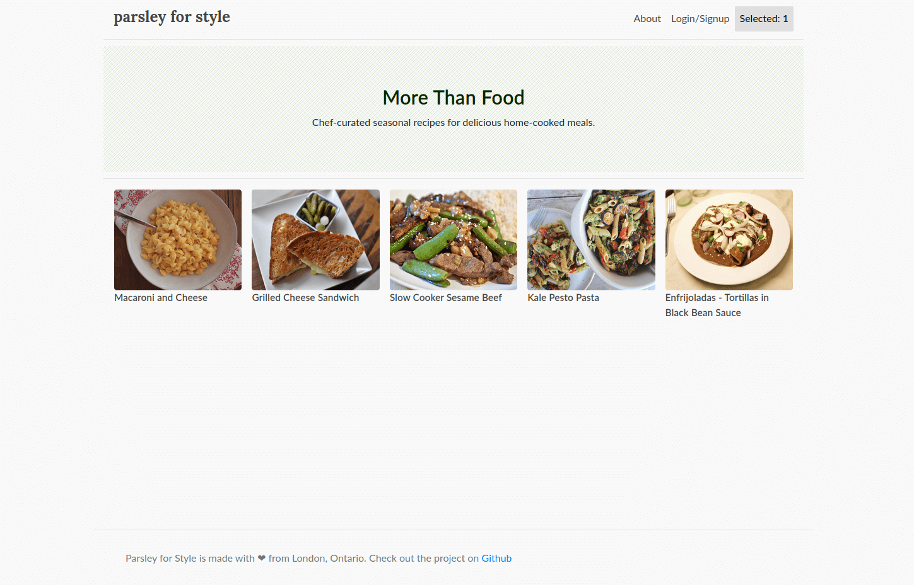

Parsley for Style is an app in development to reduce the amount of time it takes to prepare food. Promoting healthy eating by reducing barriers to starting cooking.GitHub »
This was my first Django app, using a web framework built on top of Python. Although not the prettiest interface I've ever designed, it had the ability to sign up users and keep a list of user choices

The site was hosted on AWS and used elastic beanstalk service - with EC2 servers, load balancing and S3 for static data. The database, also hosted on AWS as an RDS instance runs a Postgres database and allows flexibility to develop the app further.